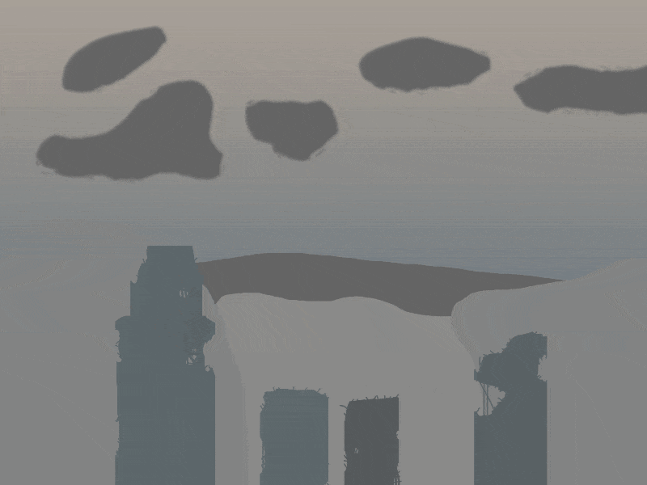
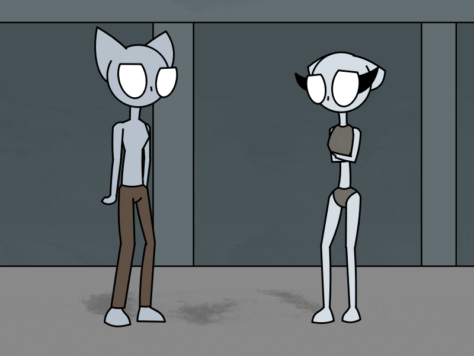
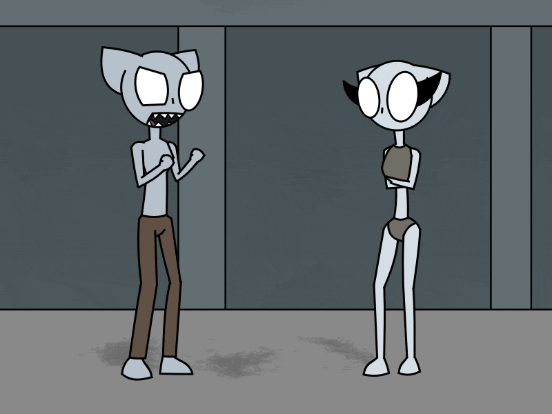
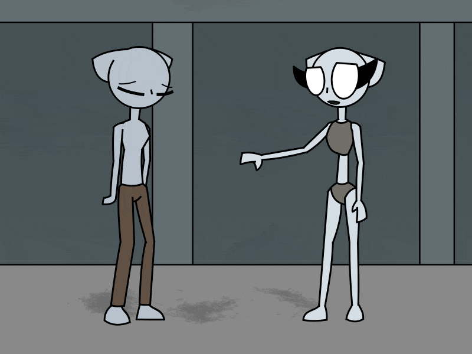
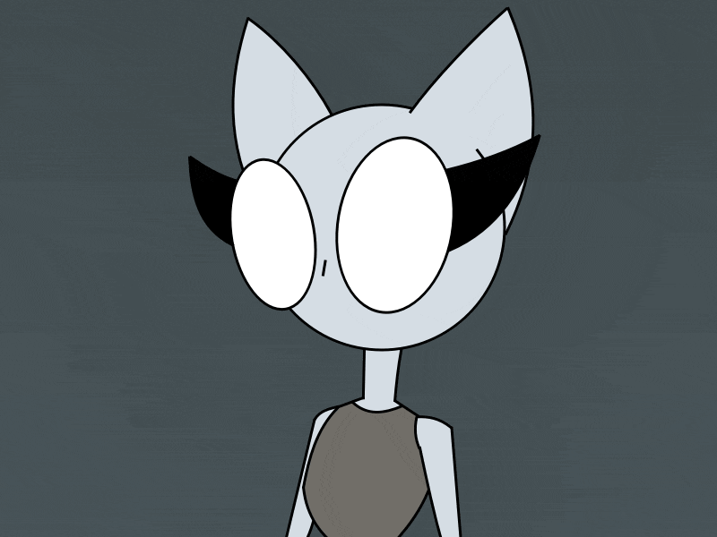
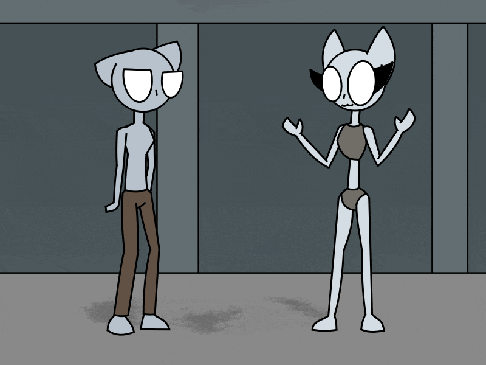
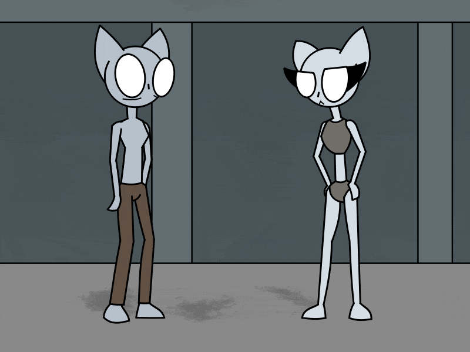
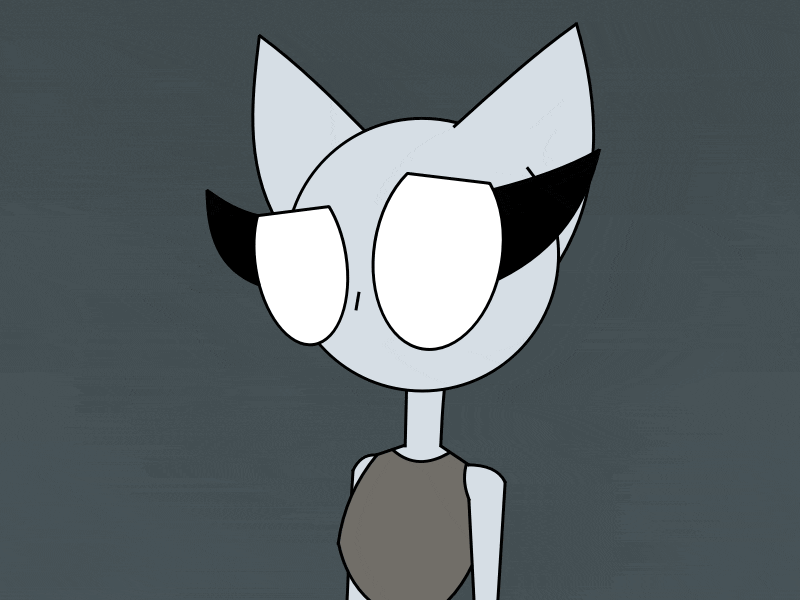
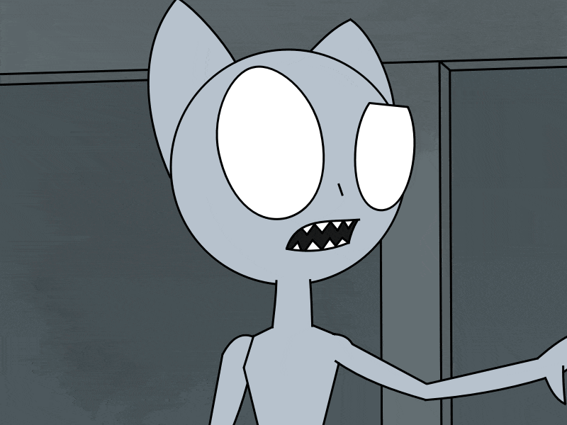
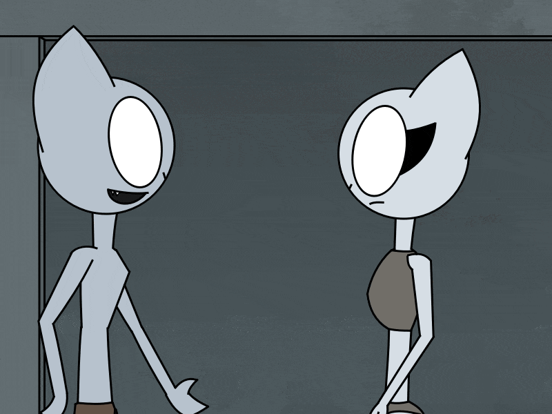

The world of Irf was in ruins. A once green and mythic world was poluted by an evil force of large immortal soldiers that
had a horrible task which they seek to finish. A war which ended multiple species. But one civilization was left.
There was a save haven in the middle of a gigantic crater. It was called Morzha Haven with it's own type of people in it
that was called Nitts.

From all the evil that had happened on the outside, they where happy to stay locked away in their small town.

At least 2 siblings, beggars, lived on the cold streets of MossWalk. They where starving without anyone's care. They will
eventually fall apart unless they did something good.
"I'm tired of starving Nisch..." The boy said. "It's okay Julp..." The girl said.

"Like ass it's okay! We've done nothing but starve and freeze in the same spot all day!" Julp yelled at his sister these
words and Nisch replied "Well what else can we do? It's not like we're strong enough to survive if we did something at all!
No one is caring enough to help us Julp.."
"I just.." Julp tried to say.

"I don't feel like dying Nisch. I don't think we deserve to go like this." He said. Then Nisch said "What do you expect us
to do? We haven't got a single pent from our parent's treasure and people probably think we're diseased. We're nothing but
animals now Julp..."

...!

"Or.. Maybe if we're lucky we'll get some food by time! Never give up after all!"
Julp wasn't so sure about what his sister said to him since she always draws a positive thought out to him and nothing has
changed afterwards. They're still in a negative position and always was in that.
"It doesn't work like that Nisch." Julp said and continued "We don't get anything by standing still. We must get a job somehow."
Nisch's mood went back to desperation and said "What jobs can we have? I doubt that I can use any tools or weapons for anything
like a job." Julp replied "Me neither.. But you might have more use with your body than any..."

"Wait.. What do you mean by using my 'body'?" Nisch interrupted. "Nothing.. Nevermind.." Julp said.
Julp's job idea got him thinking about something. "Maybe.. We can make our own job?"

"I'm sorry brother but it's a lot harder to start a business than you think. It requires money, time..."

"That's not what I meant. Should have been more precise on what I said to you."

"We will craft our own job ourselves. To prove that we are worth everyone's time. Then we can get what we need!" Julp said
with a smile. "What job do you think we should do then?" Nisch replied in question.
"I don't know yet. But we can figure out one if we use both our heads." Julp said.
(Work In Progress)
Back